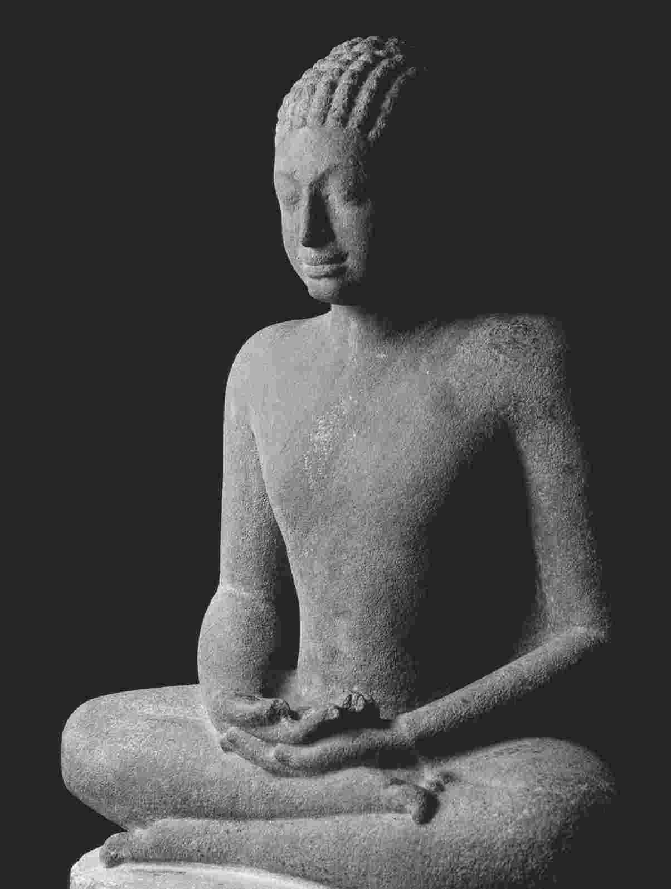
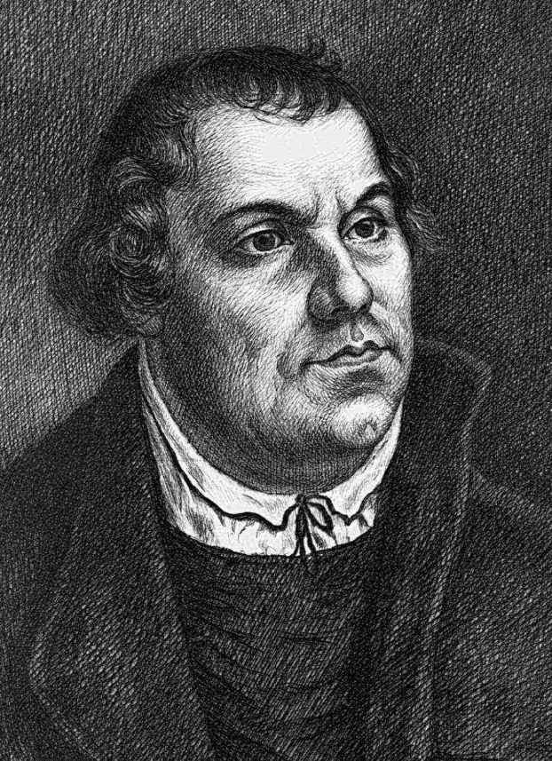

黑格尔很重视历史。康德认为可以在纯粹哲学的基础上讨论人性是什么以及必须是什么，而黑格尔则认同席勒的看法，即人类境况的基础可以随历史时期的不同而发生改变。这种变化的观念，这种贯穿在历史中的发展观念，对于黑格尔的世界观来说是非常基本的。弗里德里希·恩格斯在回顾黑格尔对他本人及其同事卡尔·马克思的重要意义时曾写道：
我们暂且不必关心恩格斯最后所说的——关于世界历史的发展是黑格尔思想体系的“验证”——这句话的含义，因为引起恩格斯注意的黑格尔思想发展与世界历史发展之间无疑具有的那种平行已经足以说明，我们用黑格尔对世界历史的理解来切入其思想体系是有正当理由的。
由恩格斯这段话还可以看出，在评价黑格尔对马克思和他本人的重要影响时，他把黑格尔的历史感置于首位。因此，在开始介绍黑格尔的《历史哲学》时，我们先从这样一个主题开始，它不仅对黑格尔的体系，而且对其思想的持久影响都至关重要。
首先要知道“历史哲学”在黑格尔那里是什么意思。黑格尔的《历史哲学》包含了大量历史材料，其中可以看到某种世界历史纲要。从中国、印度和波斯的早期文明开始，经由古希腊到罗马时代，它追溯了欧洲历史的发展道路，从封建制到宗教改革一直到启蒙运动和法国大革命。不过，黑格尔显然并不认为他的《历史哲学》仅仅是一个历史纲要。这是一部哲学著作，因为它把纯粹的历史事实当作原始材料，并试图超越这些事实。黑格尔说：“历史哲学只不过是对历史的深思罢了。”这虽然可能是他本人的定义，但并没有充分表达他在《历史哲学》中所要表达的意思。黑格尔的定义没有说，根据他的意图，对历史的“深思”应试图把原始材料呈现为一种理性发展过程的一部分，从而揭示出世界历史的意义。
这里我们已经有了黑格尔的一个核心信念——相信历史有某种意义。倘若黑格尔的历史观像麦克白的人生观一样阴郁，也就是说，把历史看成“一个白痴所讲的故事，虽然滔滔不绝、充满愤怒，却毫无意义”，那么他永远也不会尝试撰写《历史哲学》，其一生的工作也会变得面目全非。当然，现代的科学看法与麦克白很相近。它说，我们这颗行星仅仅是大得无法想象的宇宙中的一粒微尘。在这颗行星上，生命起源于气体的偶然结合，然后在自然选择的盲目力量下发生演化。与关于物种起源的这种看法相一致，大多数现代思想都拒绝承认，除了创造历史的无数个人的无数目的之外，历史还有什么最终目的。而在黑格尔的时代，他自信人类历史并非各种事件的无意义堆积，这并不稀奇——事实上，即使在今天，它也没有超出正常范围，因为宗教思想一直试图从人类历史的发展进程中看出意义，即使这种历史只有作为尚未到来的一个更美好世界的序幕才有意义。
关于历史有意义这一说法，可以从许多角度来理解。既可以将它理解为，历史实现了某个发动整个历史进程的造物主的目的，也可以更加神秘地将它理解为是想暗示宇宙本身就可能有目的。此外，还可以去除“历史有意义”这一断言的所有宗教的或神秘的含义，只把它理解成一种较为狭窄的说法，即反思过去能使我们看清历史的走向及其最终目标；如果幸运的话，该目标将是令人向往的，因此可被视为我们的奋斗目标。
对应于对历史有意义的不同理解，我们也可以从不同角度来理解黑格尔的《历史哲学》。根据把握黑格尔思想的总体策略，我们先来讨论这部著作中的这样一些要素，它们将上述理解方式中的第三种即最少神秘色彩的意义赋予了历史。
在《历史哲学》的导言中，黑格尔清晰阐述了他所认为的整个人类历史的方向和目标：“世界历史不过是自由意识的进步罢了。”这句话为全书设定了主题。（我们甚至可以说，它概括了黑格尔全部思想的主题——不过这一点我们稍后再谈。）现在我们来看看黑格尔是如何详细阐述这一主题的。
黑格尔先是论述了他所谓的“东方世界”，即中国、印度和古代波斯帝国。黑格尔认为，中国和印度是“停滞的”文明，社会一旦发展到某一点便动弹不得。他称这些文明“处于世界历史之外”，换句话说，它们并非构成黑格尔历史哲学基础的整个发展过程的一部分。真正的历史开始于波斯帝国。黑格尔说，这是“逝去的第一个帝国”。
黑格尔对东方世界的讨论包含许多细节，所有这些细节都与一种想法有关，那就是在东方社会，只有统治者一个人才是自由的个体，所有其他人都完全缺少自由，因为他们的意志必须服从于族长、喇嘛、皇帝、法老或其他什么专制者的意志。这种自由的缺乏达到了很深的程度。专制者的臣民们知道，如果不服从专制者的意志，就会受到残酷的惩罚。不仅如此，这似乎还暗示他们有自己的意志，可以思考而且的确思考过服从专制者是否明智或正确。黑格尔说，事实上，东方的臣民并无现代意义上的个人意志。在东方，法律甚至是道德本身都是一种外在的规定。那里缺乏个人良知的概念，因此个人根本不可能形成关于对错的道德判断。对东方人来说，除统治者外，关于这些问题的看法都来自于外界；它们是关于世界的事实，和高山海洋的存在一样无须质疑。
根据黑格尔的说法，这种个人独立性的贫乏在不同的东方文化中有不同形式的表现，但结果总是一样的。黑格尔告诉我们，中国人的国家是基于家庭原则建立起来的。政府以皇帝所实施的家长式的管理为基础，所有其他人则自视为国家的孩子。正因如此，中国社会非常强调人要尊敬和服从父母。而印度则没有个人自由的观念，因为其基本社会制度——给每一个人都指定了职业的种姓制度——并未被看成政治制度，而是被看成某种自然的、从而不可改变的东西。因此在印度，统治性的力量不是专制的人，而是自然的专制。
波斯就不同了。虽然初看起来波斯皇帝似乎是与中国皇帝大体相同的专制君主，但波斯帝国的基础并不只是自然的家庭服从扩展到整个国家，而是对臣民和统治者都有约束力的一般原则或法律。因为波斯是一个神权统治的君主政体，其基础是崇拜光明神的琐罗亚斯德教。黑格尔很重视光明这一观念，认为它是某种纯粹和普遍的东西，就像太阳一样平等地普照万物和恩泽万物。当然，这并不意味着波斯是平等主义的。皇帝依然是专制君主，因此是帝国中唯一的自由人。但他的统治建立在一般原则的基础之上，而且未被看成自然事实，这意味着发展是有可能的。这种建立在理智原则或精神原则基础上的统治观念，标志着黑格尔想要追溯的自由意识发展的开端。因此，波斯是“真正历史”的开端。

图5 佛陀乔达摩·悉达多（约公元前563-前483）
在波斯帝国，自由意识的发展是有潜力的，但这种潜力在帝国的结构之下不可能实现。然而，波斯帝国在扩张过程中接触到了雅典、斯巴达等古希腊城邦。波斯皇帝要希腊人承认其霸权，但遭到拒绝，遂集结起庞大的军队和舰队，与希腊舰队在萨拉米斯展开了激战。黑格尔说，这场英勇的战役是力图把世界统一在一个最高统治者之下的东方专制者与承认“自由个体”原则的各个城邦之间的较量。而希腊人的胜利意味着，世界历史的潮流从专制的东方世界转移到了希腊城邦世界。
虽然黑格尔认为自由个体的观念为希腊世界赋予了生气，但他也认为，在这一历史阶段，个体自由还远没有得到充分发展。他之所以认为希腊的自由观念有局限性，乃是出于两点理由。一个直接，一个更复杂。
直接的理由是，希腊的自由观念允许奴隶制。事实上，“允许”一词太弱了些，因为在黑格尔看来，希腊的民主形式要想能够运作，就必定需要奴隶制。比如在雅典，如果每一位公民都有权利和义务参加作为城邦最高决策机构的公共集会，那么谁来做日常工作以提供生活之所需呢？因此必须有一类劳动者，他们不享受公民权利也不承担公民义务，换句话说，必须有奴隶。
在东方世界，只有一个人即统治者是自由的。奴隶制的存在意味着希腊世界已经发展到这样一个阶段，此时有一些人——不是所有人——是自由的。但黑格尔认为，即使是希腊城邦的自由公民也只有一种不完全的自由。他这样说的理由并不容易把握。黑格尔声称，希腊人没有个人良知的观念。正如我们所看到的，黑格尔认为东方世界也缺乏这一观念。但东方人毫无反思地服从上层留传下来的道德规范，而希腊人的行为动机却发自他们的内心。根据黑格尔的说法，希腊人习惯于为自己的国家活着而不做进一步反思。这种习惯并非源于对某种抽象原则的接受，比如主张每个人都应为自己的国家而行动。事实上，希腊人习惯于认为自己与其特定的城邦密不可分地联系在一起，以至于不会区分他们自身的利益和他们所处的共同体的利益。他们无法设想自己脱离或反对这个共同体及其所有习俗和社会生活方式。
所有这些都意味着，希腊人真心愿意去做对共同体最有益的事。这表明，希腊人的自由与东方人有所不同。希腊人根据自己的意愿去做事，而不是按照外在命令的要求去做。但黑格尔说，正因为动机来得如此自然，所以这种自由是不完整的。无论培养而成的习惯和习俗会带来什么结果，这些结果都不是源于对人的理性的运用。如果我是出于习惯而做某事，那么我就并非有意为之。可以说，即使没有专制者告诉我做什么，而且行为的动机看起来也发自内心，我的行动也仍然受制于我的意志之外的力量，受制于使我形成习惯的社会力量。
作为依赖于外在力量的一种表现，黑格尔提到希腊人在从事任何重要的冒险行动之前都喜欢征求神谕作指导。神谕的建议有可能基于一个献祭用的动物的肠子状态，或者基于其他某个全然独立于当事者本人思想的自然事件。真正自由的人决不会让最重要的决断由这些事件来决定，而是会用自己的理性能力做出决断。理性能使自由的人超越自然世界的偶然事件，并对影响他的环境和力量做出批判性的反思。因此，没有批判性的思考和反思就不可能完全获得自由。
于是，批判性的思考和反思乃是进一步推动自由发展的关键。来自希腊神阿波罗的诫命敦促希腊人沿这条道路前进：“人啊，认识你自己！”不受习惯信念的束缚，进行自由探索，这一号召为希腊哲学家尤其是苏格拉底所接受。苏格拉底通常会以一种对话形式来表达自己的观点，其对话者是某位雅典俊杰，后者自认为很清楚什么是善、什么是正义。事实证明，这种“知道”只不过是随声附和一些关于善或正义的流行说法罢了。苏格拉底毫不费力就能表明，这种习惯性的道德观念不可能充分。例如，针对通常认为的正义就是物归原主，苏格拉底举出一种情形：一位朋友借给你一件武器，但此后变得精神错乱了。你也许欠他这件武器，但将其归还真的就正义吗？就这样，苏格拉底引导其听众对自己一直以来所接受的习惯性道德准则进行批判性的反思。这种批判性反思使理性而非社会习俗成为对与错的最终评判者。
黑格尔把苏格拉底所例证的原则看成反对雅典城邦的一种革命性力量，因此他认为判处苏格拉底死刑是无可指摘的：雅典人宣判的是使其集体得以维系的传统道德的最危险敌人。但独立思考的原则深深地植根于雅典人心中，一个人的死并不能将其根除。因此，指控苏格拉底的人最终被判刑，苏格拉底本人也在死后被证明无罪。然而，这一独立思考原则却是雅典衰落的最终原因，它标志着希腊文明在世界历史中扮演的角色开始走向尽头。
与构成希腊城邦基础的那种无反思的习惯性统一体相对照，黑格尔说罗马帝国由不同民族所组成，缺少任何自然的族长纽带或其他习惯性纽带，因此需要在暴力的支持下以最严厉的纪律组织在一起。这便使罗马在世界历史下一阶段的统治像是回到了以波斯帝国为典型的东方专制模型。但正如黑格尔所显示的，世界历史的进程虽然肯定不是一帆风顺、稳步前进，但也不是倒退。前一时代所获得的东西绝不会完全丧失。因此黑格尔认真区分了罗马帝国和波斯帝国背后的原则。产生于希腊时代的个体性观念以及个人有能力做出判断的观念并未消失。事实上，罗马帝国的基础是这样一种政治体制和法律制度，它把个人权利当作其最基本的观念之一。因此，罗马帝国对个人自由的认可是波斯帝国从未达到的。当然，潜在困难是，这种对个人自由的认可纯粹是法律或形式上的——黑格尔称之为“抽象的个人自由”。允许个人发展出各种思想和生活方式的那种真正的自由——黑格尔称之为“具体的个体性”——则被罗马的冷酷暴力无情地摧毁了。
于是，波斯帝国与罗马帝国之间的真正差异在于，东方专制主义原则肆意主导着波斯帝国，罗马帝国则一直在国家的专制权力与个体性的理想之间保持着张力。波斯帝国尚未发展出个体性理想，因此缺少这种张力。希腊世界也缺少这种张力，因为虽然个体性的观念已经初现端倪，但政治权力尚未残酷无情地集中起来与之对抗。
正如黑格尔所描绘的，罗马世界并非幸福之地。希腊世界那种充满快乐的、自发的自由精神已经不复存在。面对着表面上必须服从的国家命令，只有退回到内心，躲进斯多亚主义、伊壁鸠鲁主义或怀疑论那样的哲学中才能找到自由。我们在此无须关心这些相互对立的哲学流派的细节，重要的是它们都倾向于蔑视现实世界所提供的一切——财富、政治权力、世俗荣耀——并希望用一种生活理想取而代之，这种理想要求其信奉者对外在世界所发生的一切都绝对无动于衷。
根据黑格尔的说法，这些哲学流派之所以能够流传蔓延，是因为自视为自由人的个体面对着专横跋扈的权力必定会感到无能为力。然而，退回到哲学之中却是对这种境况的一种消极回应，是面对着充满敌意的世界所提出的一种令人绝望的建议。这里需要的是一种更加积极的解决办法，而基督教提供了这种办法。
要想理解黑格尔为什么这样看基督教，就必须知道，在黑格尔看来，人类并不仅仅是非常聪明的动物。人类和动物一样生活在自然世界中，但他们也是精神性的存在。在认识到自己是精神性的存在之前，人类一直深陷于自然界，即那个物质力量的世界。当自然界像罗马世界一样执意阻碍人类对自由的渴望时，自然界内部无处可逃，除非像上面提到的那样退回到一种对自然界持纯粹负面态度的哲学中去。然而，一旦人类认识到自己是精神性的存在，自然界的敌意就不再那么重要了；它能以积极的方式被超越，因为自然界之外有某种积极的东西。
根据黑格尔的说法，基督教之所以特殊，是因为耶稣基督既是人，又是上帝的儿子。这便教导我们，虽然人在某些方面有局限性，但他是按照上帝的形象创造出来的，人的内部有一种无限价值和永恒使命。结果便发展出了黑格尔所谓的“宗教的自我意识”，即认识到我们真正的家不是自然世界，而是精神世界。要想获得这种认识，人就必须打破自然欲望乃至整个自然生存施加给他的束缚。
认识到人类的精神本性对于他们是根本的东西，这正是基督教的任务。然而，这并非一蹴而就，因为所需要的不仅是内心的虔诚。基督徒虔诚内心中所发生的变化还必须对外在现实世界加以改变，使之能够满足作为精神存在的人类的要求。正如我们将要看到的，为了能够实现这一点，人类从整个基督教时代一直走到了黑格尔的时代。
没过多久，希腊时代所特有的那些对自由的限制的确被废除了。首先，基督教反对奴隶制，因为每一个人类成员都具有相同的、本质上的无限价值。其次是不再依赖神谕，因为神谕代表着自然界的偶然事件对精神存在者的自由选择的支配。第三，大体上出于同样的理由，希腊社会那种习惯性的道德被一种以精神性的爱的观念为基础的道德所取代。
基督教在罗马帝国时期开始崭露头角，在君士坦丁大帝治下则成为国教。虽然西罗马帝国因蛮族入侵而陷落，但拜占庭帝国在1000多年的时间里一直信仰基督教。不过在黑格尔看来，这是一种停滞而颓废的基督教，因为它试图用基督教的虚假外表来粉饰那已经烂透了的组织结构。需要一个新的民族来实现基督教的最终宿命。
也许有点奇怪，黑格尔竟然把从罗马帝国陷落直到近代的整个历史时期都称为“日耳曼世界”。他使用的术语是“日耳曼的”（Germanische）而不是“德国的”（German），不仅包括严格意义上的德国，而且包括斯堪的纳维亚、荷兰甚至是不列颠。我们将会看到，意大利和法国的发展也没有被忽视，尽管他在这里用“日耳曼的”一词把这些国家包括在内缺乏语言学和种族关系上的理据。我们也许会料想，黑格尔把这个时代称为“日耳曼世界”可能有某种种族优越感。但他这样做的主要理由是，他把宗教改革看成了自罗马时代以来唯一关键的历史事件。
黑格尔把自罗马帝国陷落以来1000年的欧洲描绘成一幅黑暗的图景。他认为在此期间，教会已经成为真正宗教精神的一种堕落，它把自己强行置于人与精神世界之间，坚持要信奉者们盲目地服从。用黑格尔的话来说，中世纪是“一个多事而可怕的漫长黑夜”。文艺复兴结束了这个黑夜，“漫长的暴风雨过后，黎明的曙光第一次预示了光辉灿烂的白天再次来临”。然而，黑格尔所说的我们现时代明媚天空中“普照万物的太阳”是宗教改革而不是文艺复兴。
宗教改革缘于教会的腐败。在黑格尔看来，产生这种腐败并非偶然，而是教会不把上帝当作纯精神的事物、反在物质世界中体现他的必然结果。它的基础是礼节、仪式和其他外在形式，遵守这些被视为宗教生活的本质。就这样，人类的精神要素被禁锢于纯粹的物质对象之中。这种根深蒂固的腐败的最终表现，就是为了最世俗的金钱去出售某种涉及人类最深刻和最内在本性的东西，即由赦罪所带来的灵魂安宁。黑格尔当然是指引发路德抗议的出售“赎罪券”的做法。
黑格尔视宗教改革为日耳曼民族的一项成就，认为它源于“其内心的坦诚和质朴”。在黑格尔看来，“质朴”和“内心”是宗教改革的基调。宗教改革是由一位质朴的德国修士路德发起的，而且只在日耳曼国家扎下了根。它废除了罗马天主教会的浮华和仪式，认为每个人内心之中都有一种与基督的直接精神联系。
然而，如果把宗教改革看成某个被称为“宗教”的孤立生活领域中的一个事件，那将与黑格尔对宗教改革的看法完全相反。一方面，黑格尔总是强调我们历史发展的不同方面之间的内在关联；另一方面，正如我们已经看到的，人类要想实现其精神本性，仅仅完善其宗教生活是不够的，还必须把他们生活的世界变得与自由精神相适应。因此黑格尔认为，宗教改革远不只是抨击旧的教会并用新教取代了罗马天主教。宗教改革宣称，每一个人都能认识到其自身精神本性的实质，并能获得自身的拯救。无须外在的权威来诠释《圣经》等圣典，也无须举行仪式，个人的良知便是真理和善的最终仲裁者。在断言这一点时，宗教改革展开了“自由精神的旗帜”，并宣告了它的根本原则：“人天性就注定是自由的。”

图6 马丁·路德（1483-1546）
自宗教改革以来，历史的任务不过是按照这个根本原则来改变世界。这项任务并不小，因为如果每个人都能自由地运用理性的力量去判断真理和善，那么只有符合理性标准，世界才能得到普遍赞同。因此，必须使所有社会制度——包括法律、财产、社会道德、政府、政体等等——符合理性的普遍原则。只有到那时，个人才能自由地选择接受和支持这些制度。只有到那时，法律、道德和政府才不再是自由的主体不得不服从的任意规定和权力。只有到那时，人类才将是自由的，并与他们生活的世界完全地和谐一致。
要使所有社会制度都与理性的普遍原则相符合，这听起来像是启蒙运动的主张。让一切事物服从于清晰冷静的理性之光，拒绝接受任何基于迷信或世袭特权的东西，这正是伏尔泰、狄德罗等18世纪法国思想家的学说。在黑格尔叙述的世界历史中，启蒙运动以及继之而来的法国大革命的确是下一个——几乎是最后一个——事件。但黑格尔对法国大革命的态度并不完全符合他对宗教改革本质的评论给人的预期。
黑格尔认为，法国大革命源于法国哲学家对现存阶层的批判。大革命之前的法国有一批贵族，他们没有实权，却享有大量毫无理性基础的特权。针对这种完全非理性的事态，哲学家们的人权观念得到认可并取得了胜利。黑格尔明确指出，他认为这一事件具有重要意义。
然而，这个“光辉灿烂的精神黎明”的直接后果却是大革命的恐怖。这种形式的暴行没有法律手续便行使权力，并用断头台上的瞬间毙命作为惩罚。是什么地方出了错？错误就在于试图施行纯粹抽象的哲学原则，而没有考虑人民的意向。这种做法乃是基于对理性角色的误解。理性绝不能脱离现存共同体和组成它的人民来使用。
因此，法国大革命本身是一种失败。然而，其世界历史意义却在于它传播到其他国家，特别是德国的那些原则。拿破仑的短暂胜利足以给德国带来权利法典，使之建立起个人自由和所有权自由，使最有才能的公民担任国家公职，并废除封建义务。君主仍然处于政府的顶端，其个人决定是最终的裁决。但黑格尔说，由于有牢固确立的法律和稳定的国家机构，留给君主本人去决定的“实际上都不是大事”。
黑格尔对世界历史的叙述现在已经到了他自己的时代，所以也行将结束。他在结尾时（以略为不同的表述）重复了他在全书开头所引入的主题——“世界历史不过是自由观念的发展罢了”，并暗示自由观念的进步现已达到顶点。所需要的有两方面：一是个人应当根据自己的良知和信念来管理自己，二是客观世界即那个有着各种社会政治制度的现实世界也应当合理地组织起来。仅有根据自己的良知和信念来管理自己的个人是不够的，那还只是“主观的自由”。只要客观世界还没有被合理地组织起来，根据自己的良知去行动的个人就会与它的法律和道德发生冲突。因此，现有的法律和道德将会反对他们并限制其自由。而一旦客观世界被合理地组织起来，根据自己良知行事的个人就可以自由地选择行为而与客观世界的法律和道德相一致。到那时，自由将同时存在于主观层面和客观层面。自由将不再受到限制，因为个人的自由选择与整个社会需要之间将是完全和谐的。自由的观念将会成为现实，世界历史也将达到它的目标。
图7 攻占巴士底狱，1789年，标志着法国大革命的开端
这一终结的确形成了高潮，但它留下了一个明显的悬而未决的问题。对道德、法律和其他社会制度的合理组织会是什么样子？什么是真正合理的国家？在《历史哲学》中，黑格尔几乎没有谈及这个问题。他对当时德国令人鼓舞的描绘，以及同时给出的自由观念的进步已经达到顶点这一陈述，都只能意味着他相信自己的国家在他那个时代已经是一个合理组织的社会。不过他并没有明言这一点，他对近代德国的描述太过简要，我们弄不清楚为什么他所描述的这些特殊安排要比之前的所有统治形式更为合理。
之所以过于简要，可能仅仅是因为《历史哲学》是授课讲义。众所周知，大学授课在临近课程结束时往往会发现时间不够。但同样有可能，黑格尔在《历史哲学》中有意极少谈及这一主题，因为这乃是其《法哲学原理》的主要焦点。为了更完整地刻画黑格尔所理解的那种合理组织的因而是真正自由的共同体，我们必须转向这部著作。